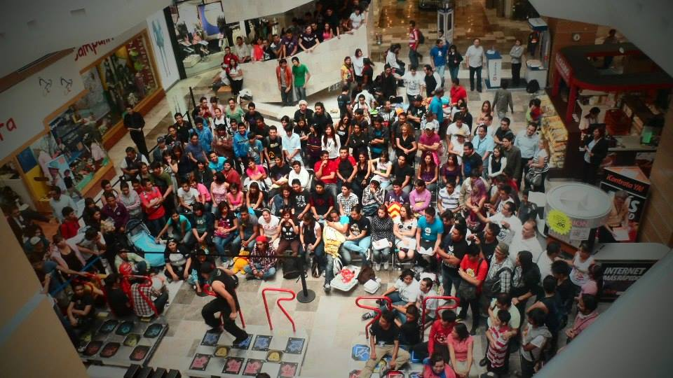

Esto te lo escribo después de haber reflexionado mucho.
No te voy a negar que lloraré de nuevo; no tanto, pero sí un par de veces más. No creo que sea por dolor, sino más bien por nostalgia. Ya sabes: recordar e imaginar lo que pudo ser.
Se me hizo un hueco en el estómago cuando dejé de leer tus mensajes aquella primera vez que dejamos de platicar en Facebook. Sentí que te había perdido para siempre.
Luego de un tiempo me volviste a contactar (grr!), y desde entonces comencé a ser muy feliz.
Haber dado contigo fue increíble para mis canciones. Siempre me he preguntado si algunas de ellas han llegado a ti. Como esta que escribí estando contigo:
Se me rompía el corazón al imaginar que te ibas para comenzar de nuevo. Sabes que jamás te juzgué; me aterraba la idea de que tuvieras que desempeñar aquel papel una vez más.
Yo nunca quise forzarte a aprender algo que no te gustara. Estaba seguro de que encontrarías algo que te llenara de emoción y me lo contarías enseguida. Tampoco quise que sintieras que dependías de mí, y de verdad celebro que no sea así.
Solo quise que estuvieras lista para cuando llegara el día, a tu modo.
Cuando te conocí pensé en apoyarte. Eso fue lo que mi sentir me llevó a imaginar cuando comencé a entender tu realidad. Me hace feliz que hoy hayas salido adelante a tu manera. En ti sigue latiendo todo ese talento que pude ver desde aquella cerveza en la Condesa.
Eres una persona genuinamente inteligente, y la gente lista suele cargar con muchas cosas. Yo tampoco supe apoyarte en ese sentido.
Más tarde entendí mis propios conflictos: lo que te hice estuvo mal y no hay forma de olvidarlo.
Mi hiperactividad me hace buscar recuerdos, canciones o argumentos para conservar tu amistad intacta, pero no los encuentro.
“No me hallo”, dice El Personal.
No mientras la herida que te hice siga abierta.
Tú lo dijiste con claridad: te violenté, hice mella en lo nuestro.
Sé que me has dicho que aún guardas rencor. Ojalá puedas sanar eso con el tiempo, de veras.
Yo, por ahora, solo puedo alejarme.
Si tú dices que también me hiciste daño, no lo recuerdo. Mi forma de ser me permite aceptar cosas que otros no aceptarían.
No sé si eso sea bueno o malo. Pero sí sé esto: tú no me hiciste daño.
Yo solo era un niñote que quería compañía mientras hacía lo que amaba.
Amé cada segundo llorando contigo viendo One Piece.
Disfruté vivir contigo en Iztapalapa.
Guardo con cariño cuando jugábamos Pokémon Go y encontramos a Rin.
Y amo recordarte jugando algo que amabas cuando te conocí: Pump It Up.

grr!
Pero sobre todo, te amo.
Porque aunque todo ya es pasado, tú sigues siendo presente y futuro.
Te amo incondicionalmente. Y aunque no volvamos a encontrarnos, eso no cambia.
Escribiré tantas canciones como recuerdos y sueños conserve intactos.
Debí poner mucho más de mí. No estuve a la altura contigo.
Está bien olvidarme.
Si de pronto decides perdonar y de verdad quieres cultivar una relación de amistad conmigo, me gustaría escucharte.
Si no es así, y entiendo que así sea, solo quiero que sepas que no te olvidaré y nunca hablaré mal de lo nuestro; si alguien me pregunta sobre ti, les diré que te quedaste a ser feliz en Guadalajara.
(’:
Epílogo
Ahora, déjame compartirte mi plan para que podamos cada quien comenzar de nuevo:
1. La casa: ya sabes que me gustaría regresarme a Acopilco. No sé cuánto me tome, pero eventualmente pasará. Aunque también me gustaría seguir explorando Guadalajara u otros estados, sin duda.
Durante el tiempo en que eso se desarrolle, puedes seguir viviendo en el departamento, porque, como ya había sugerido, económicamente te invito a ahorrarte lo de la renta que me das para buscar o preparar un espacio cómodo para ti.
Cuando estés lista para mudarte, querrás contactarme.
2. Los gatos: son como nuestros hijos. Si tú estás dispuesta a hacerte cargo de ellos, de mi cuenta te puedo hacer llegar una mensualidad que cubra sus gastos.
Si llegaran a necesitar algo más —y eventualmente así será—, no dudes en acercarte a mí.
Sé que me dirás que yo también puedo verlos, pero tú continúa leyendo.
3. Las cosas: son de ambos, y todas tuyas; te lo dejo a tu discreción.
Lo que hay en tu habitación es tuyo; lo que quieras conservar de afuera es tuyo. Lo que sea que necesites puedes conservarlo sin problema: tecnología, muebles, juguetes, libros, trastes, utensilios, electrodomésticos, etc.
No está en mi naturaleza despojarte, a ti ni a nadie que aprecie, de algo que pueda servirles y esté en mis manos.
Yo siempre te apoyaré.
PDTA
Recientemente te he escrito varias canciones ya; sin embargo, la que más me gusta de ellas es la siguiente. Le puse Hazy Gyal, pues porque cheves y chavas:
Una vez me seudoentrevistaron y me preguntaron —creo que te dije— por qué me gustaba explicar mis canciones o el proceso, mentalidad o contexto detrás de ellas. Supongo que me gusta escribir cosas ambiguas que puedan ser interpretadas desde varios ángulos.
En particular, esta canción es producto de la catarsis de haber aceptado el fin de la relación.
Quiero desearte cosas lindas, todas buenas, pero también deseo lo mismo para mí.
Esto es algo que puedes cantar a alguien o a ti mismo; así me doy ánimos.
Después de todo, siempre termino llorando con mis canciones…